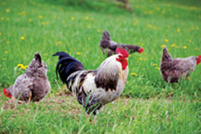

The results are coming in from Mother Earth News’ latest round of pastured egg nutrient tests. Once again, pastured egg producers are kicking the commercial industry’s butt - yippee, go free range! Our previous tests found that eggs from hens raised on pasture - as compared to the official USDA data for factory-farm eggs - contain:
Now we’re looking at vitamin D, of which many people don’t get enough. New research is showing that this common vitamin deficiency may be related to much more than just weak bones - from diabetes and cancer to heart disease and multiple sclerosis. (You can read more about this important health issue in Vitamin D: Sunshine and So Much More.)
Our bodies can get vitamin D in two ways: when sunlight strikes our skin, or from our diet. Eggs are one of a small list of foods that are naturally rich in vitamin D. The USDA says supermarket eggs contain an average of 34 International Units per 100 grams. Our tests of eggs from four pastured farms in Texas, Kansas, Kentucky and Pennsylvania found that their eggs contained three to six times as much vitamin D as typical supermarket eggs. This means two scrambled eggs from pastured hens may give you 63 to 126 percent of the recommended daily intake of 200 IU of vitamin D.
You can keep track of our ongoing pastured egg research at our Chicken and Egg Page. If you raise pastured chickens and are interested in participating in one of our studies, e-mail us.
|
 ISTOCKPHOTO/DIETER HAWLAN More vitamins, less cholesterol and saturated fat - not to mention great flavor! - free-range eggs are far superior to supermarket eggs. |
|
|